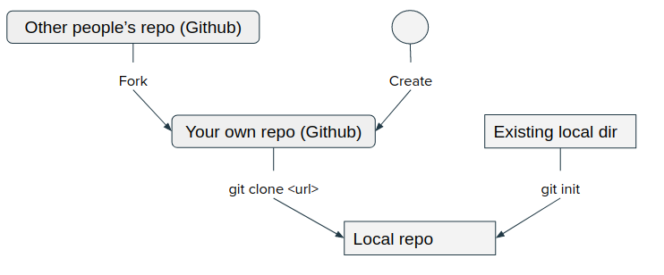

How to contribute code using git¶
Page last updated on: 2020-07-07
Part 1. One-time set up¶
Identity:¶
$ git config --global user.name "<Your Name>"
$ git config --global user.email <your email>
Save credential for 6 hours:¶
$ git config --global credential.helper 'cache --timeout=21600'
Save credential permanently:¶
$ git config --global credential.helper store
Alias of showing git history:¶
Add this to ~/.gitconfig
[alias]
lg = log --graph --abbrev-commit --decorate --format=format:'%C(bold blue)%h%C(reset) - %C(bold green)(%ar)%C(reset) %C(white)%s%C(reset) %C(dim white)- %an%C(reset)%C(bold yellow)%d%C(reset)' --all
Part 2. Start a new repository¶

Clone a remote repo:¶
Clone a remote repo to local computer:
$ git clone <url>
Convert a local directory:¶
Convert an existing local directory to local git repository:
$ git init
Part 3. Single line development:¶
![](data:image/svg+xml;charset=utf-8,%3C%3Fxml%20version%3D%271.0%27%20encoding%3D%27UTF-8%27%3F%3E%0A%3C%21DOCTYPE%20svg%20PUBLIC%20%22-//W3C//DTD%20SVG%201.0//EN%22%20%22http%3A//www.w3.org/TR/2001/REC-SVG-20010904/DTD/svg10.dtd%22%3E%0A%3Csvg%20viewBox%3D%220%200%20832%20120%22%20xmlns%3D%22http%3A//www.w3.org/2000/svg%22%20xmlns%3Ainkspace%3D%22http%3A//www.inkscape.org/namespaces/inkscape%22%20xmlns%3Axlink%3D%22http%3A//www.w3.org/1999/xlink%22%3E%0A%20%20%3Cdefs%20id%3D%22defs_block%22%3E%0A%20%20%20%20%3Cfilter%20height%3D%221.504%22%20id%3D%22filter_blur%22%20inkspace%3Acollect%3D%22always%22%20width%3D%221.1575%22%20x%3D%22-0.07875%22%20y%3D%22-0.252%22%3E%0A%20%20%20%20%20%20%3CfeGaussianBlur%20id%3D%22feGaussianBlur3780%22%20inkspace%3Acollect%3D%22always%22%20stdDeviation%3D%224.2%22%20/%3E%0A%20%20%20%20%3C/filter%3E%0A%20%20%3C/defs%3E%0A%20%20%3Ctitle%3Eblockdiag%3C/title%3E%0A%20%20%3Cdesc%20/%3E%0A%20%20%3Cellipse%20cx%3D%22131%22%20cy%3D%2266%22%20fill%3D%22rgb%280%2C0%2C0%29%22%20rx%3D%2224.0%22%20ry%3D%2224.0%22%20stroke%3D%22rgb%280%2C0%2C0%29%22%20style%3D%22filter%3Aurl%28%23filter_blur%29%3Bopacity%3A0.7%3Bfill-opacity%3A1%22%20/%3E%0A%20%20%3Cellipse%20cx%3D%22323%22%20cy%3D%2266%22%20fill%3D%22rgb%280%2C0%2C0%29%22%20rx%3D%2224.0%22%20ry%3D%2224.0%22%20stroke%3D%22rgb%280%2C0%2C0%29%22%20style%3D%22filter%3Aurl%28%23filter_blur%29%3Bopacity%3A0.7%3Bfill-opacity%3A1%22%20/%3E%0A%20%20%3Cellipse%20cx%3D%22515%22%20cy%3D%2266%22%20fill%3D%22rgb%280%2C0%2C0%29%22%20rx%3D%2224.0%22%20ry%3D%2224.0%22%20stroke%3D%22rgb%280%2C0%2C0%29%22%20style%3D%22filter%3Aurl%28%23filter_blur%29%3Bopacity%3A0.7%3Bfill-opacity%3A1%22%20/%3E%0A%20%20%3Cellipse%20cx%3D%22707%22%20cy%3D%2266%22%20fill%3D%22rgb%280%2C0%2C0%29%22%20rx%3D%2224.0%22%20ry%3D%2224.0%22%20stroke%3D%22rgb%280%2C0%2C0%29%22%20style%3D%22filter%3Aurl%28%23filter_blur%29%3Bopacity%3A0.7%3Bfill-opacity%3A1%22%20/%3E%0A%20%20%3Cellipse%20cx%3D%22128%22%20cy%3D%2260%22%20fill%3D%22rgb%28255%2C255%2C255%29%22%20rx%3D%2224.0%22%20ry%3D%2224.0%22%20stroke%3D%22rgb%280%2C0%2C0%29%22%20/%3E%0A%20%20%3Ctext%20fill%3D%22rgb%280%2C0%2C0%29%22%20font-family%3D%22sans-serif%22%20font-size%3D%2220%22%20font-style%3D%22normal%22%20font-weight%3D%22normal%22%20text-anchor%3D%22middle%22%20textLength%3D%2221%22%20x%3D%22128.5%22%20y%3D%2270%22%3EC1%3C/text%3E%0A%20%20%3Cellipse%20cx%3D%22320%22%20cy%3D%2260%22%20fill%3D%22rgb%28255%2C255%2C255%29%22%20rx%3D%2224.0%22%20ry%3D%2224.0%22%20stroke%3D%22rgb%280%2C0%2C0%29%22%20/%3E%0A%20%20%3Ctext%20fill%3D%22rgb%280%2C0%2C0%29%22%20font-family%3D%22sans-serif%22%20font-size%3D%2220%22%20font-style%3D%22normal%22%20font-weight%3D%22normal%22%20text-anchor%3D%22middle%22%20textLength%3D%2221%22%20x%3D%22320.5%22%20y%3D%2270%22%3EC2%3C/text%3E%0A%20%20%3Cellipse%20cx%3D%22512%22%20cy%3D%2260%22%20fill%3D%22rgb%28255%2C255%2C255%29%22%20rx%3D%2224.0%22%20ry%3D%2224.0%22%20stroke%3D%22rgb%280%2C0%2C0%29%22%20/%3E%0A%20%20%3Ctext%20fill%3D%22rgb%280%2C0%2C0%29%22%20font-family%3D%22sans-serif%22%20font-size%3D%2220%22%20font-style%3D%22normal%22%20font-weight%3D%22normal%22%20text-anchor%3D%22middle%22%20textLength%3D%2221%22%20x%3D%22512.5%22%20y%3D%2270%22%3EC3%3C/text%3E%0A%20%20%3Cellipse%20cx%3D%22704%22%20cy%3D%2260%22%20fill%3D%22rgb%28255%2C255%2C255%29%22%20rx%3D%2224.0%22%20ry%3D%2224.0%22%20stroke%3D%22rgb%280%2C0%2C0%29%22%20/%3E%0A%20%20%3Ctext%20fill%3D%22rgb%280%2C0%2C0%29%22%20font-family%3D%22sans-serif%22%20font-size%3D%2220%22%20font-style%3D%22normal%22%20font-weight%3D%22normal%22%20text-anchor%3D%22middle%22%20textLength%3D%2221%22%20x%3D%22704.5%22%20y%3D%2270%22%3EC4%3C/text%3E%0A%20%20%3Cpath%20d%3D%22M%20152%2060%20L%20288%2060%22%20fill%3D%22none%22%20stroke%3D%22rgb%280%2C0%2C0%29%22%20/%3E%0A%20%20%3Cpolygon%20fill%3D%22rgb%280%2C0%2C0%29%22%20points%3D%22295%2C60%20288%2C56%20288%2C64%20295%2C60%22%20stroke%3D%22rgb%280%2C0%2C0%29%22%20/%3E%0A%20%20%3Cpath%20d%3D%22M%20344%2060%20L%20480%2060%22%20fill%3D%22none%22%20stroke%3D%22rgb%280%2C0%2C0%29%22%20/%3E%0A%20%20%3Cpolygon%20fill%3D%22rgb%280%2C0%2C0%29%22%20points%3D%22487%2C60%20480%2C56%20480%2C64%20487%2C60%22%20stroke%3D%22rgb%280%2C0%2C0%29%22%20/%3E%0A%20%20%3Cpath%20d%3D%22M%20536%2060%20L%20672%2060%22%20fill%3D%22none%22%20stroke%3D%22rgb%280%2C0%2C0%29%22%20/%3E%0A%20%20%3Cpolygon%20fill%3D%22rgb%280%2C0%2C0%29%22%20points%3D%22679%2C60%20672%2C56%20672%2C64%20679%2C60%22%20stroke%3D%22rgb%280%2C0%2C0%29%22%20/%3E%0A%3C/svg%3E%0A)
Add all files to track:¶
$ git add .
Check status:¶
$ git status
Commit:¶
$ git commit -a -m "<commit message>"
Add a file to track:¶
$ git add <file name>
Show history:¶
$ git lg
Part 4. Go to past commits¶
Create a new branch and revert to a past commit:
$ git checkout -b <new branch> <commit hash>
<new branch> is a branch name you make.
<commit hash> is the string as reported by git log
If you want to make this branch as the new master branch, do a swap as following:
-
make sure your are in the new branch
$ git checkout <new branch> -
force master to merge with current branch and use current branch as favored:
$ git merge -s ours master -
go to the master branch and reconcile again:
$ git checkout master $ git merge <new branch> -
after merge, delete the branch.
$ git branch -d <new branch>
Part 5. Multi-line development¶
Show branches:¶
$ git branch
¶
Show remote branches:
$ git branch -r
Switch between branches:¶
$ git checkout <branch name>
Create and switch branch:¶
$ git checkout -b <branch name>
Merge branches:¶
$ git merge <another branch>
This will merge a branch to current branch:
Merge with current favored:¶
$ git merge -s ours <another branch>
Delete branches¶
$ git branch -d <branch name>
Force delete:¶
$ git branch -D <branch name>
Part 6. Sync remote and local¶
Check remote:¶
$ git remote -v
Add more remotes:¶
$ git remote add <remote> <url>
Pull from remote repo:¶
$ git pull
$ git pull <remote> <branch>
Push to remote:¶
$ git push
Push new local branch to remote:¶
$ git push -u <remote> <branch>
Delete remote branch:¶
$ git push <remote> --delete <branch>
Delete remote tracking branch:¶
$ git remote prune <remote>
Part 7. Merge branches¶
Common scenario of merge:¶
-
Start a new feature:
$ git checkout -b new-feature -
Edit some files, then commit the change:
$ git commit -a -m "Start a feature" -
Edit some files, then commit more changes:
$ git commit -a -m "Finish a feature" -
Merge in the new-feature branch:
$ git checkout master $ git merge new-feature $ git branch -d new-feature
Conflict in merge:¶
When conflicts occur, the conflicting files will have visual marks like:
<<<<<<< master
conflicting text in receiving branch
=======
conflicting text in merging branch
>>>>>>> branch
You need to edit text and remove <<<<<<, ======, >>>>>> lines.
Then run a commit:
$ git commit -a -m "<commit message>"